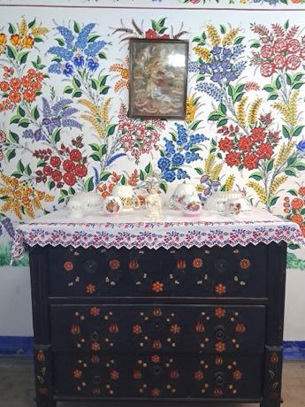

Home / Living Traditions / Northern and Eastern Europe
Encyclopedia ID 383
Kalocsa floral painting
Also known as Kalocsai virágminta


The player builds flowers from stem and petal motifs in the Kalocsa style and decorates a cloth, wall or paprika-jar pattern within a symmetrical template.
Heritage note
Part of the living heritage of Hungary.
Origins
A living tradition passed from person to person; it is not tied to a single dated origin. It belongs to the cultural world of Northern and Eastern Europe.
Sources
Related entries

Matryoshka
Russia · Crafts and making
Khokhloma Pattern Painting
Russia · Crafts and making
Rosemaling
Norway · Crafts and making
Petrykivka painting
Ukraine · Crafts and making
Dala Horse Painting
Sweden · Crafts and making
Paper Soccer
Poland +2 · Crafts and making
More from Hungary

Cimbalom
Hungary · Musical instruments
Mounted Archery Course
Hungary · Dexterity and skill gamesHungarian dominoes
Hungary · Board and table games